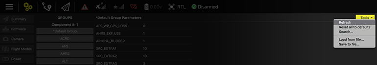
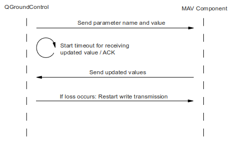

Parameter 변경하기
Introduction
안녕하세요 여러분. 정말 오랫만에 포스팅하는 것 같습니다. 최근 제가 하고 있는 과제와 관련하여 일들이 많아 포스팅을 하지 못했습니다 ㅜㅜ. 많은 양해 부탁드립니다. 오늘은 조금 간단한 부분에 대해 다루어보고자 합니다. 오늘 말씀 드릴 것은 바로 설정값 변경 부분입니다. 자 그럼 본격적으로 시작해 보겠습니다.
What is Parameter
Pixhawk의 가장 큰 특징 중 하나는 사용자가 쉽게 설정값을 변경할 수 있도록 하는 게 아닐까 싶습니다. 전에도 말씀드렸지만, Pixhawk를 개발한 Lorenz Meier는 ROS의 영향을 많이 받은것 같습니다. ROS도 마찬가지로 설정값을 XML 형태로 쉽게 변경할 수 있도록 해두었거든요. ROS와 마찬가지로 Pixhawk도 그런 특징이 있는 것입니다. 이 점은 추후에 튜닝 작업할 때 매우 유용합니다. 대부분 그러는 것은 아니지만, 일반적으로 실시간으로 게인 값들이 반영이 되기 때문입니다.
How to change parameter
파라미터를 변경하는 것은 매우 쉽습니다. 우선 QGroundControl 프로그램에서 Setup의 "Parameters" 버튼을 클릭하여 변경하면 됩니다.
 잠깐 살펴보면, 그룹별로 파라미터 값들이 나누어져있는게 보입니다. 그리고 각 파라미터는 숫자값 혹은 문자가 적혀 있는게 보이는 군요. 여러분은 Pixhawk를 통해 이 많은 파라미터를 변경함으로써 우리에게 맞는 기체로 튜닝이 가능해집니다. 아.. 참고로 그룹별로 파라미터가 나누어져 있는데 이 그룹은 무엇을 의미할까요? 여러분 아시겠나요? 네 뭐 100% 그런것은 아니지만, 모듈별로 파라미터가 나누어져 있는 것이지요. 전에 말씀드린것 처럼 Pixhawk는 uORB 방식을 통해 모듈별로 나누어져 있다고 했지요? 그 모듈을 말하는 것입니다. 즉, 모듈별로 나누어져 있으니, 여러분이 필요한 그룹을 쉽게 찾을 수 있을 것입니다.
잠깐 살펴보면, 그룹별로 파라미터 값들이 나누어져있는게 보입니다. 그리고 각 파라미터는 숫자값 혹은 문자가 적혀 있는게 보이는 군요. 여러분은 Pixhawk를 통해 이 많은 파라미터를 변경함으로써 우리에게 맞는 기체로 튜닝이 가능해집니다. 아.. 참고로 그룹별로 파라미터가 나누어져 있는데 이 그룹은 무엇을 의미할까요? 여러분 아시겠나요? 네 뭐 100% 그런것은 아니지만, 모듈별로 파라미터가 나누어져 있는 것이지요. 전에 말씀드린것 처럼 Pixhawk는 uORB 방식을 통해 모듈별로 나누어져 있다고 했지요? 그 모듈을 말하는 것입니다. 즉, 모듈별로 나누어져 있으니, 여러분이 필요한 그룹을 쉽게 찾을 수 있을 것입니다.
자.. 여기까지 따라오셨다면, 파라미터 수정은 정말 쉬운것임을 알 수 있지요. QGroundControl만 있으면 되기 때문입니다. (물론 나중에 중요한 것은 파라미터 값을 얼마나 잘 튜닝하냐이지만요.) 여기서 잠깐.. 몇가지 팁을 드릴게요. 여러분께서 Pixhawk로 작업을 하시게 되면 아마 이 파라미터 값들을 정말 많이 수정하시게 됩니다. 그렇게 되면 아무래도 파라미터 값들을 저장해 놓는게 좋습니다. 파라미터를 이렇게 바꾸었더니 잘되더라, 못되더라 등등이 이지요. 하지만, 워낙 파라미터가 많다보니 하나하나 다 수기로 적어 놓는 것은 힘듭니다. 그래서 QGroundControl의 상단 오른쪽에 보시면 "Tools"라는게 보이실 겁니다.

여기에 보시면 "Save to file" 이라는 메뉴가 보이실 건데, 이걸 누르시면 Pixhawk에 있는 파라미터들을 모조리 긁어 파일로 만들어줍니다. 그 파일을 보시면 아시겠지만, 정말 많은 파라미터들이 들어 있는 것을 보실 수 있습니다. 잠깐 살펴 볼까요?
# Onboard parameters for vehicle 1
#
# MAV ID COMPONENT ID PARAM NAME VALUE (FLOAT)
1 1 ATT_ACC_COMP 1 6
1 1 ATT_BIAS_MAX 0.050000000745058060 9
1 1 ATT_EXT_HDG_M 0 6
1 1 ATT_MAG_DECL 0.000000000000000000 9
Pixhawk는 모든 게 MAV ID와 COMPONENT ID에 의해 구분됩니다. 따라서 매우 중요한 정보니 꼭 기억하시고 있으셔야 합니다. 기본값은 1이지만, 여러분께서 한대 이상의 드론을 가지고 계시다면, 필히 MAV ID를 다르게 가져가실 것을 당부드립니다. 다음은 PARAM NAME 입니다. 앞에서 보셨던 파라미터 이름이 됩니다. 다음은 VALUE입니다. 옆에 (FLOAT)이라고 써져있군요. 그런데 가만히 보면 VALUE에 해당되는 값이 있고 바로 옆에 또 하나의 값이 있군요. VALUE는 4번째 항목을 나타내고 마지막인 5번째 항목은 그 값의 TYPE을 나타냅니다.
즉 ATTACCCOMP의 경우 VALUE는 1이고 TYPE은 6이라는 뜻입니다. 그러고 보니 VALUE는 값이니깐 잘 알겠고, TYPE은 뭘까요? TYPE은 VALUE의 값의 형태입니다. 정수값인지, 실수값인지 등등을 말합니다. 참고로 여기서 6은 정수 타입이고 9는 실수 타입이라고 생각하시면 됩니다.
여기까지 잘 따라오셨나요? 이제 우리는 잘못하여 파라미터 값이 엉터리로 들어가거나 초기화 되는 경우 다시 복원할 수 있게 된것이지요. 복원은 어떻게 하냐구요? 당연히 "Load from file" 메뉴를 통해 할 수 있지요. 여기서 한가지 더.. 만약 우리에게 두 대의 드론이 있어서 MAV ID를 1과 2로 구분지어 놓았다고 하지요. (이렇게 하신 분은 정말 잘 따라오고 계신겁니다.) 그런데 생각해 보니 같은 형태의 드론이라 굳이 1번에서 튜닝하여 겨우 획득한 파라미터 값을 2번에 그대로 복사하고 싶은거지요. 이런 경우 어떻게 하면 될까요? 당연히 "Save to file"을 해서 "Load from file"을 하면 되겠지요? 하지만... 그렇게 하면 안됩니다. 왜냐.. MAV ID가 틀리기 때문이지요. QGroundControl이 버전이 올라가면서 현재 나와있는 Ver 3.0에서는 안됩니다. 이제는 MAV ID를 맞춰저야 하지요. 어떻게 맞추면 될까요? MAV ID 항목을 바꾸고자 하는 MAV ID로 바꾸는 거지요. 그렇게 해야 "Load from file"이 됩니다. 그리고 다 바꾸신 다음 MAV ID도 바꾸는 것 잊지마세요.
여기까지도 잘 따라오셨나요? 여기까지 따라오셨으면 파라미터 바꾸는 것은 이제 완벽하게 하시게 된 것입니다. 이제부터 할 것은 여러분이 모듈을 하나 추가하여 그 모듈을 위한 파라미터를 추가하고 싶을때를 대비해 말씀드릴려고 합니다. 오늘의 가장 핵심이기도 하구요. 이것을 하기 위해 우리는 파라미터가 어떻게 동작되는지를 알아야 합니다. 그럼 시작해보도록 하겠습니다.
Operation Principle
파라미터 추가하는것에 앞서 우선 파라미터가 어떻게 변경되는지에 대해 한번 따라가 보도록 하겠습니다. 자 우리는 QGroundControl을 통해 파라미터 값을 변경했습니다. 그럼 이제 QGroundControl에서 변경이 이루어질때 부터 어떻게 동작되는지를 살펴보겠습니다. QGroundControl에서 하나의 파라미터 값을 변경하는 순간, QGroundControl은 PARAM_SET(#23) Mavlink 메세지를 보냅니다. 이후에 변경된 파라미터값을 보내줍니다.

그럼 Pixhawk 내부에서는 수신 받은 PARAMSET을 mavlink 모듈에서 수신을 받습니다. (src/modules/mavlink/mavlinkparameters.cpp 를 참고하세요) 그리고 MAV ID와 COMPONENT ID를 확인한 후, 매칭이 되면 우선 파라미터 이름값이 정확한지 확인하기 위해 Pixhawk가 가지고 있는 파라미터 중에서 그 이름을 가지고 있는지 확인합니다.
param_t param = param_find_no_notification(name);
파라미터 이름이 valid하면 파라미터 값을 설정합니다.
param_set(param, &(set.param_value));
그리고 앞에서 말씀드렸던 것처럼 그 정보를 다시 QGroundControl에 보냅니다.
send_param(param);
그리 어렵지는 않지요? 생각해보면 매우 직관적이어서 쉽게 따라 할 수 있습니다.
마지막으로 한가지 더... 그럼 파라미터는 어디에 저장될까요? sdcard 메모리에 저장될까요? 아닙니다. 원칙적으로는 자체 플래쉬에 저장이 됩니다. 따라서 메모리 카드를 꼽지 않느 경우에도 파라미터는 존재합니다. 참고로 만약 자체 플래쉬가 문제가 있거나 없는 경우에는 메모리 카드의 /fs/microsd/params 위치에 있는 params를 로딩합니다.
How to add new parameter
이제 한번 새로운 파라미터를 추가해보도록 하겠습니다. 새로운 모듈을 만들거나 혹은 기존의 모듈에 새로운 파라미터를 추가하는 일이 생길 수 있겠지요. 만들어진 모듈들을 보시면 일반적으로 아래와 같습니다.
CMakeLists.txt
[모듈이름]_main.c(pp)
[모듈이름]_params.c
주로 이런 규칙을 따르는 것이지요. 물론 개발자가 여러명이다 보니 이 규칙을 따르지 않은 경우도 있지만 어찌되었든 비슷합니다. 여러분은 이제 이 파일 이름들만 보아도 어디에 파라미터들을 추가할지 아실겁니다. 어딜까요? .. 맞습니다. [모듈이름]_params.c 파일입니다. 그럼 이 파일을 열어볼까요?
/**
* <title>
*
* <longer description, can be multi-line>
*
* @unit <the unit, e.g. m for meters>
* @min <the minimum sane value. Can be overriden by the user>
* @max <the maximum sane value. Can be overriden by the user>
* @decimal <the minimum sane value. Can be overriden by the user>
* @increment <the "ticks" in which this value will increment in the UI>
* @reboot_required true <add this if changing the param requires a system restart>
* @group <a title for parameters which form a group>
*/
PARAM_DEFINE_FLOAT(MC_PITCH_P, 6.5f);
이렇게 되어 있군요. 맞습니다. PARAM에 대한 자세한 설명과 함께 정의가 되어 있습니다. 그럼 우리는 여기에 하나 추가하면 되는거지요.
다음은 이 파라미터를 사용해야 하는 곳은 ... 뭐 거의 당연히 [모듈이름]main.c(pp) 이겠지요. 일반적으로 클래스로 모듈이 구현되어 있는데, _paramshandles, params 라는 멤버 변수를 이용합니다. 다시 한번 말씀드리지만, 앞에 ""가 붙은 변수는 멤버 변수를 나타내므로 꼭 기억하시길 바랍니다. (코드가 길어지다 보면 이게 멤버 변수인지 지역 변수 인지 헷갈리는 경우가 많으니 ""로 구분하시면 됩니다.) _paramshandles는 파라미터를 처리할 수 있는 handle값을 나타내고, 실제 파리미터는 _params에 저장됩니다. 각 모듈마다 정말 많은 파라미터들이 있기 때문에 Pixhawks는 각 모듈들에게 _params와 같은 구조체를 만들어 사용하는 것이지요.
일반적으로 각 모듈은 파라미터의 handle값을 얻기 위해 생성자에 handle값을 얻는 로직을 아래와 같이 넣어둡니다.
_params_handles.thr_max = param_find("MPC_THR_MAX");
_params_handles.thr_hover = param_find("MPC_THR_HOVER");
참고로, param_find는 상당히 많은 리소스를 잡아 먹는 함수이므로 이 함수를 자주 부르는 것은 좋지 않습니다. 따라서 생성자 부분에서 한번만 부르고 그 handle값을 가지고 있도록 해주는게 바람직합니다.
이후, 파라미터값들을 업데이트 하기 위한 멤버 함수를 하나 만들고, 이를 업데이트 합니다.
/* fetch initial parameter values */
parameters_update(true);
실제 parametersupdate 함수를 보면 paramget을 사용하여 업데이트 하고 있음을 알 수 있습니다. C++ 타입과 C 타입에 따라 업데이트 방법이 틀리지만, 일반적으로 C 타입으로 주로 많이 쓰고 있습니다. 솔직히 저도 C++ 타입 시스템의 경우는 아직 분석을 해보지 않아 잘 모르겠습니다.. 좀더 공부하여 포스팅 하겠습니다!!
/* update C++ param system */
updateParams();
/* update legacy C interface params */
param_get(_params_handles.thr_min, &_params.thr_min);
각 모듈마다 일부분은 틀리지만, 제가 말씀 드린 큰 로직은 변함이 별로 없습니다. 따라서 여러분들도 새로운 모듈을 생성하는 경우는 이러한 관례를 따라 작성하시는 게 좋습니다. 왜냐구요? 여러분의 코드가 Pixhawk의 메인 코드에 업데이트 되었을때 다른 사람도 쉽게 이해해야 하니깐요.
한편 중요한 사실 중 하나는 이 parameters_update함수가 주기적으로 불릴 수 있다는 것입니다. 물론 이 또한 모듈마다 틀리지만, 대개의 경우 혹은 실시간 변화가 필요한 경우는 그렇습니다. 이말의 의미는 무엇일까요?... 맞습니다. 비행 중에 게인값들을 조정하면서 실험할 수 있다는 의미입니다. 즉, PID 게인값들 조정을 위해 한번 takeoff한 후 시험하고 landing하는 일을 반복하지 않고, 실시간으로 조정해 보면서 업데이트 할 수 있다는 얘기입니다.!! 하지만 그 시험에 대한 안정성은 장담못합니다. ㅋㅋ 따라서 게인값 바꾸실때 너무 팍팍 바꾸지 마시고 적당히 바꾸시길 간곡히 부탁드립니다.
How to change parameters in NuttX (Option)
마무리로 들어갈려다가 한가지 더 말씀드리고 싶어서 좀더 적어봅니다. 앞에서 파라미터 수정하기 위해 QGroundControl을 이용하는 방법에 대해 알아보았습니다. 하지만, 사용하시다 보면, QGroundControl보다는 NuttX가 훨씬 유용할 때가 있습니다. 일단 GUI가 아니다 보니 간단합니다. GUI에 익숙하신 분들은 QGroundControl이 좋겠지만, QT도 있어야 하고 실행하기 위해 미리 갖추어야 할 부분이 많죠? 하지만, NuttX와 같은 콘솔은 간단하게 텍스트로 명령이 가능하지요. 그리고 아무래도 GUI보다는 훨씬 많은 기능이 포함되어 있어 강력합니다. 따라서 NuttX의 콘솔에 꼭 익숙해 지시길 바랍니다.
NuttX에 올라가는 명령들은 대부분 src/systemcmds/ 에 모여있습니다. 이중 파라미터 변경과 관련된 부분은 param 명령어 입니다. 우선 파라미터를 보는 명령을 수행해 보겠습니다.
nsh> param show
NuttX에서 해보시면 엄청 많은 파라미터가 순식간에 주루룩 나오는 것을 볼 수 있습니다. 너무 많죠? 마우스로 스크롤해도 끝까지 보지도 못합니다. 여기서 한가지 팁을 드릴게요. 앞에서 말씀드렸다시피, 각 파라미터는 모듈별로 구분되어 있습니다. 따라서 모듈별로 앞에 아래와 같이 모듈 이름이 붙습니다. 대~부분 그렇습니다.
[모듈이름]_[세부이름]
ex) MC_ROLL_P
그러면 우리는 이 모듈 이름을 가지고 부분적으로 찾기를 할수 있습니다. 어떻게요? 이렇게요..
nsh> param show "MC_*"
그럼 아래와 같이 결과가 나옴을 알 수 있습니다.
Symbols: x = used, + = saved, * = unsaved
x MC_ROLL_TC [97,183] : 0.2000
x MC_PITCH_TC [98,184] : 0.2000
x + MC_ROLL_P [99,185] : 7.0000
이제 변경을 해보겠습니다. MCROLLP값을 변경해보죠. 현재는 7.0인데 8.0으로 바꾸어보겠습니다.
nsh> param set MC_ROLL_P 8.0
+ MC_ROLL_P: curr: 7.0000 -> new: 8.0000
자 이제 바뀐것을 보실 수 있습니다. 이제 이 내용을 플래쉬에 저장해보겠습니다.
nsh> param save
param 명령은 이 외에도 외부 파일로 부터 load하고 save하는 것도 가능하며 다양한 기능들이 있습니다. 이런 명령을 잘 활용하시면 좋을 것 같습니다.
nsh> param
param: expected a command, try 'load', 'import', 'show', 'set', 'compare',
'index', 'index_used', 'select' or 'save'
Conclusion
파라미터값은 드론을 프로페셔널하게 동작시키기 위해 정말 정말 잘 알아야 하는 것 중 하나입니다. 이 값을 어떻게 바꾸냐에 따라 많은 변화가 생기기 때문이지요. 따라서 전체적인 큰 맥락을 잘 짚으시면 아마 추후에 많은 도움이 되실 거라 믿어의심치 않습니다. 그럼 더운 여름에도 몸 관리 잘하시면서 공부하시길 바랍니다. 홧팅!!